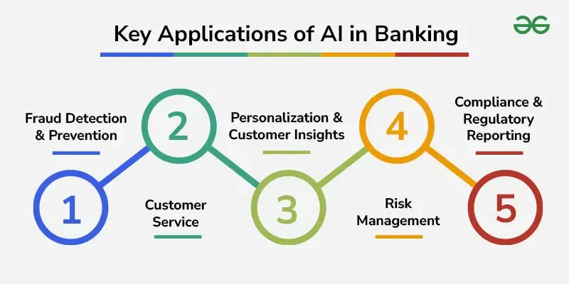

How Artificial Intelligence is Already Changing Everyday Life
AI isn’t just the future , it’s already part of our present. The key is learning how to use it responsibly. AI isn’t just about robots ,it’s about making life simple, smart, and human-friendly.
The Invisible Brain in Your Devices
I was late for a meeting last week, frantically navigating through unfamiliar side streets. As I blindly followed the calm voice from Google Maps telling me to "turn left in 200 feet," a thought struck me: I wasn't just trusting a map—I was trusting an invisible intelligence to make real-time decisions for me. That got me thinking: how often, every single day, do we unknowingly hand over parts of our lives to artificial intelligence?
Introduction: What is Artificial Intelligence?
Have you ever wondered how your phone knows your face, or how Google Maps always finds the fastest way home? That’s all because of Artificial Intelligence (AI)!
At its core, Artificial Intelligence (AI) is the science of making machines smart. It's about creating computer systems that can perform tasks that typically require human intelligence, like learning from experience, understanding language, recognizing patterns, and making decisions. For decades, AI was the stuff of science fiction—robots with personalities and computers that could outthink their creators. But today, AI has quietly moved out of the research labs and into our daily routines.
Artificial Intelligence (AI) is no longer a futuristic concept seen only in science fiction movies. It is a real and powerful technology that is shaping our world today. At its core, AI refers to systems that can think, learn, and make decisions like humans — but faster and often more accurately. From the moment we wake up and check our phones to the time we stream our favorite shows at night, AI quietly works behind the scenes to make life simpler, smarter, and more connected.
The transition has been so seamless that we often don't even notice it. So, here's a thought to get us started: Did you know your smartphone already uses AI dozens, if not hundreds, of times a day? From unlocking with your face to suggesting the perfect reply to a text, AI is the invisible engine powering our modern world.
AI in Everyday Life: Where Do We See It?
AI isn't just one single technology; it's a broad field with applications in almost every industry imaginable. Here are just a few of the ways it’s already integrated into our lives, often working behind the scenes.
Healthcare:
AI is becoming an invaluable assistant to doctors. Algorithms can analyze medical images like X-rays, MRIs, and CT scans to detect signs of diseases like cancer or diabetic retinopathy with incredible accuracy, sometimes even earlier than a human specialist can. This leads to earlier diagnosis and better patient outcomes.
For example, AI can look at X-rays and find tiny signs of problems like cancer faster than a human eye! Smartwatches like Apple Watch can even warn you if your heartbeat looks unusual. That’s AI helping you stay healthy.
Education:
The one-size-fits-all classroom model is slowly being transformed by AI. Personalized learning platforms and apps can adapt their lessons to each student’s individual pace and learning style. If a student is struggling with a math concept, the AI can provide extra practice problems and tutorials, while allowing others who have mastered it to move ahead.
For example: Apps like Duolingo or Google Classroom use AI to understand how fast you learn and give you lessons made just for you. If you struggle with math or English, the app will notice and give extra practice — just like a smart tutor who always knows what you need!
Transportation:
Getting from point A to B has never been more efficient, thanks to AI. Apps like Google Maps and Waze use AI to analyze real-time traffic data, predict congestion, and suggest the fastest routes. This same technology is the backbone of emerging self-driving cars, which use a complex web of sensors and AI algorithms to navigate the world safely.
For example: When you open Google Maps, it shows which roads are busy and gives the shortest route — that’s AI! Even cars are becoming “smart.” Some new cars can park themselves or apply brakes automatically if they sense danger. That’s AI keeping you safe on the road.
Entertainment:
Ever wonder how Netflix knows exactly what movie you want to watch next? Or how Spotify creates a "Discover Weekly" playlist that feels like it was curated just for you? The answer is machine learning, a subset of AI. These platforms analyze your viewing and listening habits to recommend content you're likely to enjoy, keeping you engaged and entertained.
For example: Have you ever noticed that Netflix or YouTube always suggests shows or videos you’ll like? That’s because AI studies what you watch and recommends similar content. So, if you watched one superhero movie, Netflix might suggest another one right after — it’s like your best friend knowing your taste in movies!


Shopping & Banking:
From the customer service chatbots that answer your questions 24/7 to the sophisticated fraud detection systems that protect your accounts, AI is revolutionizing commerce. AI algorithms can analyze thousands of transactions per second to spot unusual activity and flag potential fraud, providing a crucial layer of security for our finances.
For example: When you shop online on Amazon, AI helps show products you might love based on what you bought earlier. Banks also use AI to detect fraud — for example, if someone tries to use your card in another country, AI warns the bank immediately.
My Perspective: Benefits and Risks of AI
In my opinion, AI is one of humanity’s greatest tools — but like all technologies, it comes with both advantages and challenges.
The biggest benefit of AI is automation. It takes over repetitive and time-consuming tasks, allowing humans to focus on creativity and problem-solving. For example, in offices, AI can handle data entry, scheduling, and document organization automatically. In industries, robots powered by AI perform dangerous or precise tasks, improving safety and efficiency.
On one hand, the benefits are immense. The best uses of AI involve handing over repetitive, data-heavy tasks to machines. This automation allows for faster, more accurate decision-making and frees up human workers to focus on what we do best: creativity, critical thinking, and emotional intelligence. Think of an architect using AI to generate thousands of building designs to find the most efficient one, or a marketer using AI to analyze data, leaving them more time to craft a compelling story.
On the other hand, we can't ignore the risks. The most talked-about concern is job displacement, as automation may make certain roles obsolete. Beyond that, there are serious questions about data privacy, as many AI systems require vast amounts of personal data to learn. Another critical issue is algorithmic bias. If an AI is trained on biased data, it will produce biased results, potentially perpetuating societal inequalities in areas like hiring or loan applications.
My opinion is that AI should be designed to complement humans, not replace them. The goal should be to create intelligent systems that act as partners, augmenting our own abilities and helping us solve problems we couldn't tackle on our own.

How AI Makes Our Lives Easier
The best way to understand AI’s impact is to look at how it simplifies everyday activities.
When we ask Google Assistant to set an alarm, it understands our voice and responds naturally. When we use Google Photos, it automatically sorts pictures by faces or places — saving us hours of manual organization. Smart homes can adjust lighting, temperature, or even lock doors using AI-based automation.
Even our phones’ cameras use AI — detecting faces, smiles, and optimizing lighting for perfect selfies. AI is also in our cars, helping with parking sensors and lane detection. In short, AI is everywhere, quietly making life more convenient, comfortable, and efficient.
Recommendation engines save us time by showing us products we might actually be interested in. Even our photos get a boost from AI; my phone's camera, for example, uses AI to automatically detect smiles, reduce blur, and adjust the lighting to capture the perfect shot without me having to touch a single setting! Similarly, smart home devices can learn our preferences and automatically adjust the temperature and lighting to create a comfortable environment while saving energy.
Personally, I find it fascinating that something invisible — just lines of code — can perform actions that once required human intelligence. It reminds me how powerful learning algorithms and data can be when used creatively.
What I’ve Learned About AI:
Writing about AI has deepened my understanding of how it blends technology, data, and human thinking. What excites me most is how fast it evolves — from chatbots and virtual assistants to complex neural networks that can understand language or create art.
Diving into the world of AI has been a fascinating journey. For me, the most captivating aspect is Natural Language Processing (NLP)—the technology that allows machines to understand and respond to human language. It’s the magic behind translation apps, voice assistants, and even the spell-checkers we rely on every day. Seeing a machine grasp the nuances and context of language is a powerful demonstration of how far AI has come.
Learning about AI isn't just an academic exercise; it’s becoming a vital skill for the future. Understanding how these systems work can help anyone, regardless of their career, identify opportunities for innovation and solve real-world problems more effectively. Whether it’s in scientific research, art generation, or business analytics, AI is opening up brand-new possibilities.
For students like me, learning about AI isn’t just about coding; it’s about understanding how technology affects people. Knowing how AI works can open opportunities in research, app development, or data science — and help us contribute to building smarter, ethical systems.
Conclusion: Shaping the Future with Responsible AI:
There’s no doubt that Artificial Intelligence is fundamentally transforming our world. It's making us healthier, more efficient, and more connected. But as we continue to integrate these intelligent systems into our society, we must proceed with thoughtfulness and care.
This technology pushes us to ask important questions:
- How can we balance rapid innovation with strong ethical guidelines?
- How do we ensure that the benefits of AI are distributed fairly across society?
- Are we truly ready for a world where decisions are increasingly influenced by intelligent systems?
The path forward requires a collective effort from developers, policymakers, and the public to ensure these tools are built and used for the betterment of humanity.
AI isn’t just the future — it’s already our present. The challenge now is not whether AI will change our lives, but how we choose to shape that change. If we use it wisely, Artificial Intelligence will continue to make our everyday lives smarter, safer, and more human than ever before.